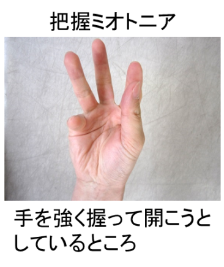

骨格筋障害
１．筋強直現象(ミオトニア)
 筋肉がスムーズに動くには、興奮(収縮)と弛緩が速やかに生じることが大切ですが筋強直性ジストロフィーでは興奮が収まりにくく、収縮が弛緩しにくい(強直)特徴が有ります。このため手を強く握った後にパッと開きにくい(把握ミオトニア)、筋腹をハンマーでたたくと筋肉の収縮が起きる(叩打ミオトニア)といった現象が見られます。また、筋電図では筋肉に針を刺した時に興奮が長時間持続するミオトニア放電が特徴的です。
筋強直現象は本症を特徴付ける症状ですが、日常生活に重篤な影響を及ぼすことは多く有りません。抗痙攣剤や抗不整脈剤が筋強直現象に対して用いられることがありますが、心伝導障害を増悪させる、眠気やふらつきなどが問題になることがあります。薬の必要性を十分に踏まえた上で使用すること、服用する場合は心電図や肝機能など副作用のチェックを定期的に行うことが大切です。
２．筋力低下・筋痛
筋強直性ジストロフィーでは筋力低下の部位に特徴が有ります。筋疾患では通常大きな力がかかる近位筋(腰帯部、肩甲帯部)から冒されやすいのですが、本症では、咀嚼筋(側頭筋)、遠位筋(手指、足底)、体幹筋(胸鎖乳突筋、背筋、腹筋)等から冒されやすい特徴があります。このため、本症で初期に見られやすい症状としては、ペットボトルの蓋を開けにくい、片足立ちがしにくい、つまずきやすい、堅い物が噛みにくい、臥位で頭が持ち上げにくい、臥位から起き上がりにくい、といったものがあります。腰痛など筋肉痛を訴える方も多く見られます。
日常生活でどのような動作に気をつけるべきか、どの程度の活動が望ましいのか、適切な装具や自助具、環境調整の方法などについて、主治医やリハビリテーション科で相談されると良いでしょう。学校や職場での配慮についてはソーシャルワーカーなどが相談に当たれる場合もあります。
３．手術・分娩を予定される場合
筋強直性ジストロフィーでは筋肉の易興奮性が存在するため、一部の麻酔薬や子宮収縮抑制剤で重篤な副作用が出ることがあります。手術や分娩を予定される場合は、担当医に本症に罹患していることを必ず伝えるようにしてください。